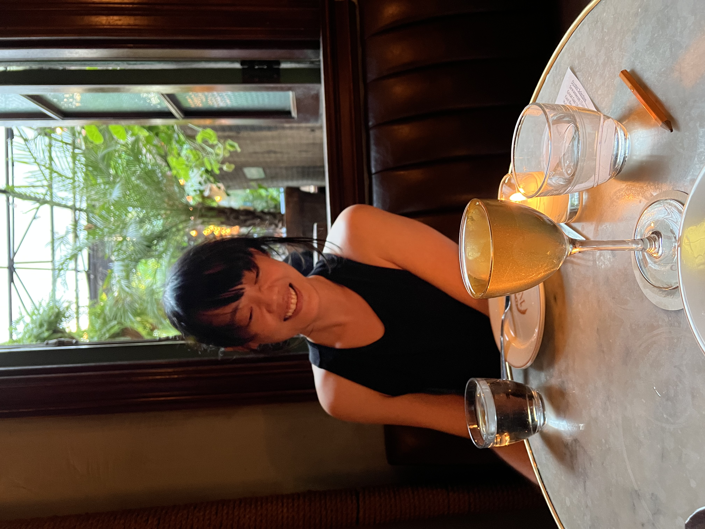
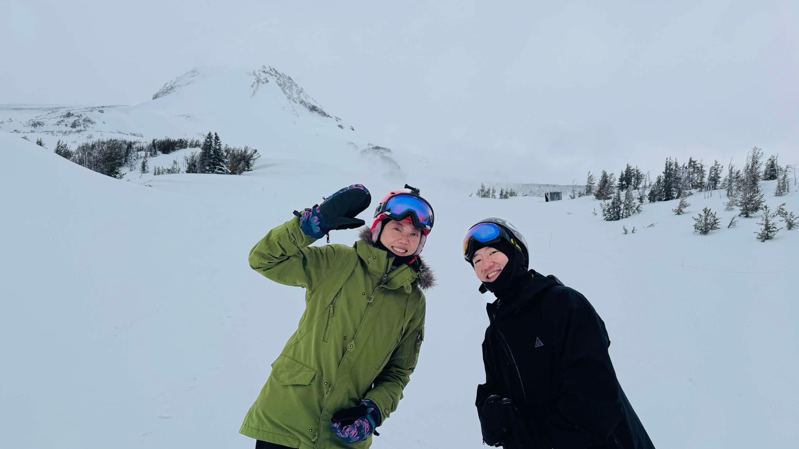

Firmware engineer by training, curious human by nature
By day, I debugging system integration issues and by night, I explore the unexpected.
I'm a beginner pole enthusiast,
an intermediate skier who cannot ride powder,
and a regular at live gigs. I'm a reader, a former artist, and a one-time photographer of galaxies
Usually with a gluten-free snack in hand.
Firmware engineer by training, curious human by nature. I spend my days writing low-level code that makes hardware think — and my evenings doing something entirely different. I'm a beginner pole dancer who surprised herself, an intermediate skier who chases powder when the season calls, and a regular at live gigs (five shows a year, at least). I read books, I used to draw, I once photographed galaxies.
I eat gluten-free — not by trend, but by necessity — and I'm always hunting for the restaurant that proves it doesn't have to mean boring. I'm a problem solver most of the time. The rest of the time, I'm just trying something new.
Six frames. One life.
